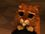

De: La Frikipedia, la enciclopedia extremadamente seria.
De: La Frikipedia, la enciclopedia extremadamente seria. De: La Frikipedia, la enciclopedia extremadamente seria.
|  | Adopción Terminación de artículos inconclusos
|
|
Destacados Selección de los mejores contenidos
| |
| |
Frikcionario Diccionario con pequeñas definiciones
|
Frikilibros Dedicado a la escritura de libros
| ||
| |
El Piriódico Creación de noticias
|
|
Reciclaje Reutilización de contenidos
|
Autor(es):